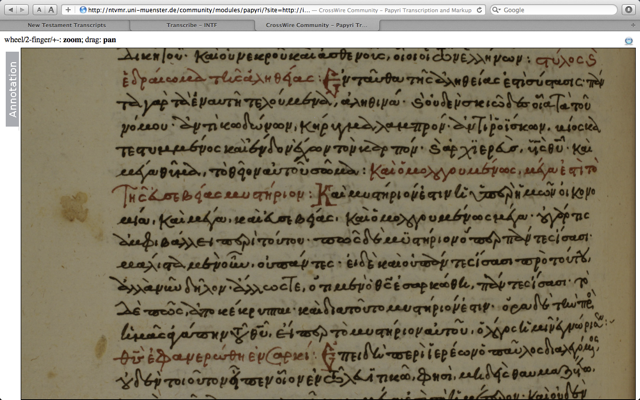
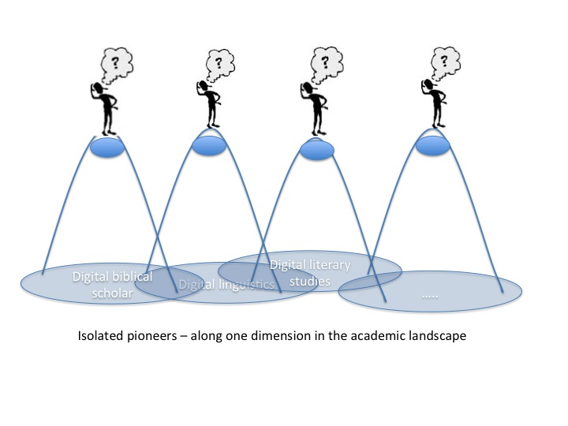
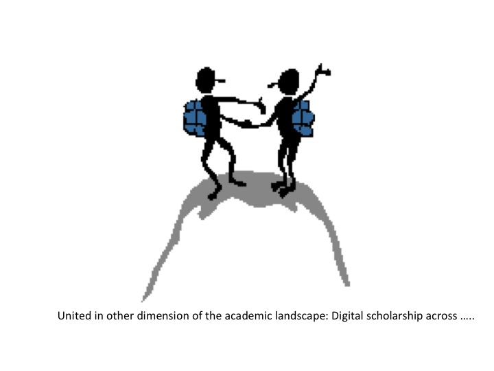

Participants on the last day of the workshop
The names of the participants are in the IPTC metadata of this photograph, the GPS location is also included.
The material has migrated from the original wiki at demo.datanetworkservice.nl to readthedocs.org on 2013-11-21.
Disccusion with Jan Krans, Alexey Somov, Ulrik Sandborg-Pedersen, Nico de Groot, Matthew Munson, Markus Hartmann, Jon Riding, Bert Jan Lietaert Peerbolte
Notes BJLP
The WIVU database itself is designed to allow data to be extracted. Allowing arbitrary “data mining”, to supplement the data, to write scripts to manipulate or search the data in ways or to answer questions not originally envisioned by the database designers.
Once you decide upon a data model, that makes the database well-defined, but you can no longer accommodate those things that do not fit the model.
Multiple information hierarchies in the text. These hierarchies are not necessarily compatible with one another. How does one preserve the hierarchical relationships and not lose information? E.g., multiple Bible translation alignments: LXX and MT, for example. Emdros is one possible solution.
Can we design a database that is optimal for incorporating new data as we go along? There is a symbiotic relationship between the database as a research tool and the database as a repository of information. Is a database designed to answer very specific research questions, or do we design it to allow uses which we today cannot predict?
Can databases be “re-purposed”? How can we combine the information of “alien” databases (or parts of them) into a “new” database or dataset for the researcher’s use?
There was some discussion about the practical problem of proprietary databases versus “open” databases.
Different manuscripts and reading traditions. Basic information unit should be an “abstract position” of the text where variants can be linked and associated.
We need some sort of standard for first level data, second level data, etc.
Standards for publication and peer review specifically relating to the digital humanities. Research publishing needs to allow the reader to – as in the natural sciences – repeat the research (data, algorithms) to see if one can get the same results. In this way, research conclusions can be validated.
Notes: Kirk Lowery
Paul Huygen, Juan Garces (Göttingen), Nicolai, Marcel Ausloos, Dirk Roorda, Henk Harmsen, Janet Dyk, Andrea Scharnhorst
Ambiguity
Variance
Granularity - Modularity
Lowest level = texts as transmitted in manuscript traditions then transcriptions then markup levels
Uncertainty on lower levels are often resilved by patterns at higher levels.
Anchoring. Paul: Münster Group is doing that. There are unique identifiers in the WIVU database.
Canonical Text Services (FRBR) (http://wiki.digitalclassicist.org/Canonical_Text_Services)
Marcel: abbreviations?
Juan: physical and logical aspects in manuscript analysis.
Nicolai: we are moving towards collaboration, sharing, multiplicity.
Paul: how do we do this from the beginning, modelling. (looks like SharedCanvas).
Andrea: how you want to deal with ambiguity should be communicated to the informatics people.
Changing classification numbers in evolving systems.
Where is the responsibility for versioning: in the application or in the archive.
The role of mistakes: must we keep them, because they are facts, or must we correct them, because we want to do analysis.
Keep both.
Janet we do not only have the glyphs: we also have higher level patterns. We are doing analysis at different levels, so we cannot separate the realm of fact and the realm of interpretation rigourously.
Nicolai: it’s important to define the purpose of the database. Sometimes you need the mistakes to be present, e.g. if you are interested in the physical texts. But on top of that we need databases, systems for representing other layers of analysis.
Nicolai: bigger players go to open source initiatives. If we in our EU project cannot use the WIVU freely for research, we may have to drop it, which we would do with reluctance.
Relationship WIVU - SESB - Logos.
Juan: Bibleworks might be the must prone to proposals like this.
Notes: Dirk Roorda
After the sub group summaries we discussed the following points:
Notes: Dirk Roorda
Nicolai, Brenda, Wido, Eep, Marcel, Joris, Paul H.
Old Testament syntactic structures - Visualization of Kirk
New Testament Complexity in the manuscript evidence - 5000 different documents
A: Information about the sources: from which time on which media type of manuscript where it is now located a visualized bibliography
lists exist on parts of the sources Nicolai: a mapping of these sources is not interesting Wido: links between manuscripts and books Brenda: where things are found say how accurate they are
N.: closeness to the sources is the most interesting feature; so any measure which allows the comparison of the similarity of texts; clustered; and than check manually
Muenster institute applied multi-dimensional scaling to cluster manuscript on the textual basis - new testament people
Paul H.: genealogy of texts using techniques like in bioinformatics - minimal spanning tree (M. there are technically problems with this method in particular if data are noisy)
Brenda: most sense would make to do analysis of word levels for the NT: the New Greek Testament is an authorative sort of source
What would you like to see visualized? Why?
Wido: how to visualize the relationship between different texts (e.g., biblical books of Samuel and Chronicles) printed: two versions side by side and changes marked in red but we would like not only have changes marked but what kind of changes
Wido: We would also like to see how we could detect changes in the sources these authors might have used
Paul H.: could we use methods of fraud-detection?
B: What can computers do? Often people do guess work. We gave so little data. What computers can do help depends on the quality of the basic data. One approach to this is to test out very different measures at the same time (M)
N: can we develop criteria to detect authorship?
M.: an experiment was done on the time magazine editorial to find out who wrote it, or who wrote which pasaages; but influences are varied so that it is almost not possible
N: can we detect style? But people adapt their style to the context in which they use it, their audience
A: visuals could be use to communicate about your research to the outside communities: how complex are your data, in time/space/kind, along which dimension you have too much data and along which dimension you have to less and might want to have methods to “enrich” the data
J: CKCC project 20 000 letters of scholars in the enlightenment period; entity recognition - biggest question are topics, but names and places are also in the focus network visualization needs defined matrices!
Wido: different versions of a story can be found - not always with the same words - latent semantic analysis; motifs/themes/semantic links between things which come with a different wording
A: clustering depends on the seed node with which we start, from some nodes of the networks the group sees itself and equally amorphous all the rest, some other start nodes gives a more clear ring structure and neighboring village structure much clearer
M: network of quotations could be constructed and than similar techniques as in citation analysis could be applied
J: could one create information from the workflows done around the basic data, when storing and coding them? Construct a network of activity of biblical scholars (from the publications - tracking in books - reconstruction the perception history but than in modern time on the analyzer level (not the source level))
N: 8000 words are in the vocabulary: lemma’s (?)
B: timing of words has been used: what are changes: spelling - but no visualization
N: but what would it help us
B: wordle used in education to show what a certain passage is about; but beyond this we not even know the questions
W: visualizing the vocabulary of the bible; A.: could we also put this into the semantic web?
A: Can we apply the CRM system of Martin Doerr’s group to sources (http://www.cidoc-crm.org/)(artifacts) around the bible? Has that be done? CRM allows to trace the journey of an object across locations, musea
N/Eep: could we visualize stories using participant analysis; seeing the story happening; visualizing the path dependency of stories and this way show and maybe visualize “alternative histories”; poems are even more complex with this respects; track to visualize what is the consequence of some decisions made and switching between them; implement different scenarios - play with them difficult to read from raw data - for teaching to undergraduates visuals would be great
A: could we borrow visualizations from film scenarios or alternative writing with many stories ask Katy
Eep: for participant tracking metaphors became important - Iina Hellsten VU
N: as we discover new rules in analysis visualize on the flight; Principal component analyses applied to things like verbs, valencies, temporal and locational entities, persons,gender, number etc
DANS could do experiments with the database on the attribute level Andrea and Dirk could check this out
B: visualize different storylines in one text
Eep: synopsis of the gospel texts - might be similar to the ManyEyes visualization of changes in treaties of US legal systems
J: try to compose the old testament just from the perspective of David -> give this as task to the computer scientists and let them model the data
Eep: applying visualization in education; visualizing the workflow so that students could be more easier get used to the work practices** strong learning system
N: how to visualize a text? There are experiences in other fields you could rely on
E: how to translate database content to some kind of visualization**
N: bible is not only text, also images and other objects - project on augmented reality around the bible
E: deliberate changes versus changes/variations by accidents - purposefully variations of story with a certain effect on the audience; how to let students experience this?
A: Visuals fly with us because we live a a visual culture, but be carefully they can also be easily misleading and they can also become dull if not done professionally (design)
Software tools:
Website of Clement Levallois, who organized the workshop on visualization together with Stephanie Steinmetz (Wido mentioned this, where Vosviewer was presented), he is in Leiden and Rotterdam, http://www.clementlevallois.net/index.php
Continued Discussion of the the Groves Center’s Westminster Hebrew Syntax
How did they compile the database? They began manually, starting with Genesis 1 and creating trees manually. Andi Wu (Asia Bible Society) began writing grammar rules. Then the parser generated trees for Genesis 1 and these were checked against the manually created trees. The grammar was modified again and run on Genesis 2 and compared again. By the time Genesis 20 was reached, the grammar was sophisticated enough for the rest of the Hebrew Bible (minus the Aramaic portions).
Most of our conversation dealt with what information was necessary in this database and what could be left out. In a tree, you need to decide which words are related to each other. What information do you need beyond that? S, V, O, IO, NP, PP. Ind Object vs. PP? Subject instead of np? How to deal with strange situation? Multiple objects for a verb? Object marker in front of what is actually a subject (cf. Neh 9:19)?
There was continued interest in how Masoretic cantillation was used. Rather than summarize the discussion, the reader is referred to the following paper by Wu and Lowery which goes into great detail about this method:
Wu, Andi and Kirk Lowery, “From Prosodic Trees to Syntactic Trees,” pp. 898-904 in Proceedings of the COLING/ACL 2006 Main Conference Poster Sessions. Association for Computational Linguistics: Sydney, July 2006. http://dl.acm.org/citation.cfm?id=1273188
Important insights: make the decisions made clear so that others can understand and disagree. Don’t make your database useless to those who don’t agree with your assumptions/decisions.
Jan Krans, Juan Garces, Markus Hartmann, Constantijn Sikkel, Rick Brennan, Dirk Roorda, Karina van Dalen, Oliver Glanz, Alexey Somov, Reinoud Oosting, Eep Talstra (part-time), Bert Jan Lietaert Peerbolte.
Discussion on newly found papyrus of Mark (1st century): http://hypotyposeis.org/
The manuscripts of the Greek NT in digital form are low hanging fruit.
Gephi open source visualisation tool
Showing the Synonym Finder
The programs gives a scored list of syonyms to a given Hebrew or Greek word. It also grabs translations in English and Chinese from the database. Can give Greek synonyms of Hebrew words and vice versa.
Janet: where did you harvest the synonyms from?
Question: we have the data to generate networks of meanings, so is this useful for scholars doing dictionary studies?
Showing the Similar Verse Finder
Shows verses with similar words in similar grammatical relationships. Similarity is sensitive to meaning, not in the first place to form, part-of-speech, morphology.
This tool crosses the OT/NT boundary.
Showing Multiple Senses for Words
Looking for the senses of strong 639. Computing the senses takes time ... Sense 7 does not have any instance yet. Uses info from the translations.
Shows all occurrences, indicating the sense it has in each occurrence.
Wido on Publication
Digital Humanities Quarterly is interested to have a special edition with contributions of this workshop. Some editorial work will be necessary.
Action Juan
Sends out a questionnaire in order to make a map. To make an inventory of our network.
Karina van Dalen
We have to show the humanists the tools in a bit more comprehensible ways.
What are the tools beyond linguistics? How do literary scholars discuss these things, how do we cooperate with programmers?
Agile development paradigm. Frequent reporting by programmers to scholars. Being involved during the complete development process. Discovering new possibilities in time, so that you can use them quickly. Benefit for programmers: they are building something that can be used.
Impressed by the tool developments that were shown here.
Ulrik confesses having done it in the wrong way at one time. The scholar did not want to use his database.
Dirk
Editions and the slide rule.
Ulrik
Socially: There is a spirit of common vision, focused: having databases of the biblical languages. Not too competitive.
Technically: people want to talk across the fields: ICT, Humanities. A lot of common understanding has been generated.
Yet: we are just starting. The real work await us: between us and among us.
Showing: The Discovery Bible, with question: is this useful?
Shows NASB text with annotations of verb tenses, more in general: to a large refeence grammar. Same for a lexicon. Plus concordance.
A scholarship-consumption tool?
Useful for teaching?
Jan: first have to feel it in action myself?
What is added value on top of SESB or Logos?
Ulrik: emphasis is marked in Greek, tense is marked in English.
Ulrik’s solution can be feature driven on the basis of whishes of the researchers.
Eep: so far it is an electronic version of a classical object: text, lexicon, grammar.
Oliver: we should have a map of feature lists: who is needing which features. That could function as an interface between scholars and programmers. We could develop larger chunks of functionality, targeted to researchers and teachers or both. What happens in workshops between scholars and programmers should somehow surface into the open.
John Cook: ambivalent. I’m not sure what I want to use in the class-room. We are always waiting for the ultimate (ICT) miracle.
Ulrik: this is a very small program: 2.500 lines of C++ on top of EMDROS.
Nicolai: agile development, participatory design that is what I like to see.
Andrea
Whenever you cross a disciplinary boundary you get an epistemic struggle. That is known. But the manifestions are always surprising, and unavoidable.
One’s solutions are another’s problems.
Explain the why-s? Find the language for that.
The topics are similar throughout digital scholarship. Do not go for a super discipline Digital Humanities, that eat up the original disciplines.
 I will post the written version of my presentation, “Greek Linguistic Databases: Overview, Recent Work and Future Prospects”, on my personal web site sometime the week of February 13. Check http://www.supakoo.com/rick/papers, it will be at or near the top of the page. If you would like a copy before then, please feel free to email me and I will send it your way.
Update: The paper is available here: http://supakoo.com/rick/papers/Leiden2012-GreekDatabases.pdf
The written version has a section on “Descriptions of Syntactic Analyses of the Greek New Testament Available in Logos Bible Software” that offers brief descriptions of each of the data sets available.
Further, I have posted video examples of the use of Grammatical Relationships, Preposition Use, Query Forms and Syntax Search Templates to YouTube. You can find them:
Grammatical Relationships and Preposition Use: http://youtu.be/MWBDukofiRk
Using Query Forms: http://youtu.be/dmar7jHT4hQ
Syntax Search Templates: http://youtu.be/VJ2mjyxb-Ko
1. Databases
What can databases do and what they cannot do? This is a topic which occurs in very different communities, it deserves further articulation on a more general level, also because it is often “state of the art” in fields. Where are databases helpful, where not, what is left out? Consolidating the community around databases, ok: make a shift from one database, one person (or a group); to shared databases, BUT you also articulated the constraints emerging with and due the databases very clearly.
2. Open up the database paradigm
link up with research fronts in CS; linked data, linked open data come to mind maybe: Dirk and Andrea and Juan and ... can design a workflow from manuscript orgainzation -> open canvas -> tabLinker also: how did we work around text traditionally, where is place for discourse in formalized processes, reintroduce uncertainty
3. Visual experimentation
You all already use ‘visuals’ somehow, and you know about their power and drawbacks, for instance if it comes how to organize the text: vertical or horizontal. Do play around with existing tools, get inspeired. Do try to get visualizations around your object of research to Information Visualization conference (as we did with Wikipedia/UDC). Don’t hide your interfaces!
4. Shared toolbox(es)
Mapping your tools and their diffusion mutual exploring them linking them shared virtual labs (plugin principles used in other communities CI shell -> see Katy Boerner’s website) also for the beautiful “toys” - from which one can learn a lot on general principles but maybe also shared libraries on the code level - again open source is the magic word
5. Complexity
If you want to use “complexity” beyond just behind a metaphor, and also testing some concepts and methods of complexity theory link up with experts, don’t go for the second best. Or do go for the second best if this is more local, easier available BUT do realize where ever such a collaboration start the methods/concepts need to go through a cycle of re-appropriation, at the end they become “biblical scholarship complexity approaches” and might not even be recognizable anymore - it is a long way
Please do realize: these processes of extending the borders to link with others and move the field, while at the same time try to keep an identity and perform inner consolidation will not go without struggles and epistemic fights. There is no innovation no new idea without controversy, on the opposite as more innovative as more controversial. but, your community should be use to these problems, maybe this is a source for tolerance.
Changing the epistemic reference system also means risks, the risk to loose control, for valid knowledge and practices to get forgotten, to get stack in redundancy, to loose the epistemic grip on your topics. The solutions of the once and the problems for the others
6. Information and documentation - old fashioned library stuff
In the process of consolidation as an information scientist I think you should have a shared resource(s) for - list of sources and editions (and their location) - list of groups - list of tools - list of publciations (Mendeley?) maybe the way Dirk proposed to share resources - sharing them means also to bring them together and make them refindable, referencable, .... and Juan’s map idea
see also http://demo.datanetworkservice.nl/mediawiki/index.php/LorentzFinal section on Andrea
OUTLINE
The presentation deals with PLOTLearner http://www.eplot.eu/project-definition/workpackage-5 as Persuasive Technology for learning, linguistics & interpretation
PLOTLearner is an Emdros database application which is
Persuasive technology seeks to move from Computer-assisted Language Learning (CALL) to Task-based Language Learning (TBLT)
Tool development is docomunted as the move from PLOTLearner 1 for skill training in morpho-syntax to PLOTLearner 2 for beginner’s learning of text interpretation
PROBLEM
Some answers to Talstra’s questions on integrating Linguistic and Literary data types.
Main points:
Research questions on what kind of knowledge?
Analytical instruments
FLOW OF PRESENTATION
Construction of text databases is not only a matter of how to include historically embedded data and annotation with contextual information, but also how to learn and engage the content databases and thus how to how to develop useful applications for the study and teaching a cultural heritage stored in a database.
The presentation seeks to move beyond Computer-assisted Language Learning (CALL)and exploit insights from current Task-based Language Learning (TBLT)in an attempt to describe the skeleton and functions of a corpus-driven, leaner-controlled tool for active learning from a database of the Hebrew Bible.
Or in more simple terms: how will a self-tutoring database enable interpreters to learn from a text?
This is the core question for a presentation of a Europe Union life-long learning project EuroPLOT http://www.eplot.eu/home which is developing Persuasive Learning Objects and Technologies – or in short PLOT - for several pedagogical tasks in 2010-2013. In this project Nicolai Winther-Nielsen and Claus Tøndering have released the first prototype of PLOTLearner http://www.eplot.eu/project-definition/workpackage-5 which is being developed by at the University of Aalborg in Denmark. An early version of this tool was presented at the 2011 Annual Meeting of the Society of Biblical Literature in San Francisco http://europlot.blogspot.com/2011/11/europlot-at-sbl-in-san-francisco.html, and the tool is now being tested in agile development processes in Copenhagen, Madagascar and Gothenburg.
At this stage of development we are already able to offer and test basic skill training generated from the Werkgroep Informatica database of the Hebrew Bible as well as for the Tischendorf Greek New Testament and the German Tiger corpus of the Frankfurter Rundschau. We are now exploring how the Emdros database management system can be used beyond simple learning skills like writing, reading and parsing of morphology and syntax beyond the existing tools and system reported on by Ulrik Sandborg-Petersen and the presenter in the Eep Talstra Festschrift from October 2011 http://europlot.blogspot.com/2011/10/publications-on-data-driven-hebrew.html.
For the Lorentz Colloquium there was two goals. First I wanted to demonstrate what we can do with Hebrew language learning through the first prototype and how we are improveing on the interface and organization of the grammatical catgories. Second we wanted to get new ideas on how to improve on the interface and functionality for the next prototype of the PLOTLeaner. The tool supports a data-driven learning from a corpus, but it is not clear how we should proceed from the current game-based learning technology for skill training to a persuasive visualization of a historical text for learners. We are also want to understand the goals and needs of learners and their instructors better and to explore how we may help them to reuse and repurpose our tool for different groups and styles of learners and for different pedagogical approaches.
To answer this the EuroPLOT is exploring three central issues on interpretation, persuasion and pervasiveness. One issue is how problem-based learning activities can be supported by our tool at an introductory learner stage and feed into meaningful tasks. Another issue is how persuasive effects and effectiveness can be triggered and measured though our technology. The third and final issue is how to deal with open educational access to data which are licensed to publishers and how we can make them available globally for learning in the Majority World.
If we can implement solutions for all three areas we believe we will be able to persuasively support the European Community’s goals for community building through intelligent learning systems and sustainable ecologies.
The presentation Databases for research, training and teaching is available online as a screencapture video which on 3BMoodle http://3BMoodle.dk, click on http://www.3bmoodle.dk/file.php/1/Lorentz-NWN-120210-2.swf.
Taverna Open Source Workflow sharing. List of users
Shared Canvas: a web-based page turning application based on Open Annotation.
RapidMiner Download: http://rapid-i.com/
Gephi - for network visualization http://gephi.org/
Katy Boerner’s tool (where the workshop in Amsterdam is Feb 16, and registration via ehumanities.nl http://sci.slis.indiana.edu/
ManyEyes, works as wordle, upload data and explore them http://www-958.ibm.com/software/data/cognos/manyeyes/
Places and Places exhibition www.scimaps.org
Visual Complexity: other visualization website for inspirations http://www.visualcomplexity.com/vc/
website of Clement Levallois, who organized the workshop on visualization together with Stephanie Steinmetz (Wido mentioned this, where Vosviewer was presented), he is in Leiden and Rotterdam, http://www.clementlevallois.net/index.php
Ben Fry’s site http://benfry.com/ from here I took the Darwin example
Drastic data: Web-based exploration of data, website of Olav ten Bosch and his project with DANS on the Dutch census http://www.drasticdata.nl/DDHome.php http://www.drasticdata.nl/ProjectVT/ - enjoy playing
Magna View: a software to visualize databases, as easy as with chart styles in EXCEL, and the (small) firm is open for academic licencing, and they are interested in unusual use of their tool in research contexts http://www.magnaview.nl/ I communicated with Dr. Erik-Jan van der Linden and we used the tool
{kind=link}
{kind=link}
{kind=link}
{kind=link}
{kind=link}
{kind=link}